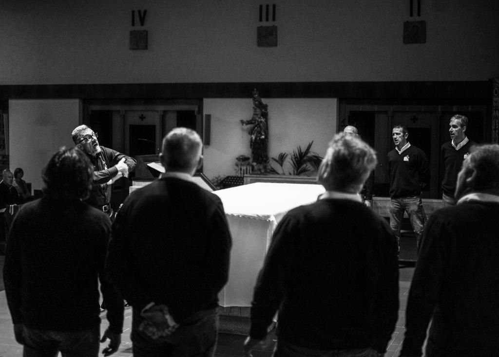

La nostra storia

Il Coro V.d.O. (Voci dell'Orobica) nasce nel Novembre 2017.
Il nucleo originario dei coristi è costituito da Alpini che hanno fatto parte del coro militare della ormai sciolta Brigata Alpina Orobica che aveva sede a Merano (BZ).
La compagine corale vuole evocare sicuramente l'origine, ma, pur nella fedeltà dell'origine testimoniata dal cappello Alpino che alcuni indossano, si apre oggi ad accogliere tra le sue fila quanti rimangono affascinati dal canto di montagna e, più in generale, dal canto corale nelle sue diverse sfaccettature.
Fra le esibizioni recenti si annovera la prestigiosa animazione della liturgia del Duomo di Milano nel maggio 2019 nonché la performance artistica dell'Orobie Film Festival 2020 di Bergamo.
La formazione sistematica, fatta di molto esercizio vocale, ma anche di percorsi alla scoperta degli elementi teorici che formano la cultura del "bel canto", hanno portato dopo meno di due anni a risultati veramente apprezzabili.
L'amore per i canti della tradizione militare e popolare, questo è il repertorio generalmente richiesto e proposto, spinge oggi il coro anche allo studio di un repertorio che va oltre a quello tradizionalmente alpino e del canto sacro; un mondo che, pur lontano dalla cultura militare, ne condivide gli orizzonti dei valori sacri all'uomo, della ricerca di ciò che ci supera e, perché no, rappresenta l'origine di qualsiasi forma di canto corale.

I nostri concerti
2019
2020
2021
2022
2023
Dicono di noi

12/02/2019 - Uggiate Trevano
Da: Sig.ra Anna e Associazione Incontro tra Popoli
Voci leggere come fiocchi di neve. Scendono sul cuore e parlano di morte e di vita, di paure e speranza. Sono note di pace, messaggi che aprono le porte del futuro e insegnano la mitezza e la bontà. Le lacrime salgono negli occhi e attendono un altor canto, una nuova carezza per scendere pazienti e far sbocciare il fiore della meraviglia. Coro alpino. Voci di cielo. Grazie per la bella e generosa serata condivisa insieme. Grazie per la vostra bontà.
19/05/2019 - Duomo di Milano
Da: Maestro Emanuele Carlo Vianelli
Innanzitutto non nascondo lo stupore, subito tramutatosi in compiacimento artistico nell'aver constatato la notevole qualità vocale del coro, che, pur partendo dalla tipica vocalità "alpina" (stupendi i falsetti e i profondi bassi) sfoggia delle caratteristiche di timbro e di suono degne dei migliori cori da me conosciuti. Così abbiamo potuto elevare il nostro animo nell'ascolto di pagine della tradizione religiosa popolare, ma anche (e soprattutto) nell'ascolto di pagine polifoniche sacre di notevole impegno, rese con una interpretazione assolutamente ineccepibile dal punto di vista filologico e vivificate da un suono "di sintesi" unico e, alle mie orecchie, sinora inedito, nobilitato da un'intonazione pressoché perfetta. La lezione che come musicista ho potuto trarre dall'incontro con il "Coro Voci dell'Orobica" è stata quella di poter ancora una volta constatare come, date le premesse di una forte esperienza umana, quale è quella contenuta nei valori della tradizione del Corpo degli Alpini, possano germogliare risultati artistici di notevolissimo spessore. Auguro al coro di proseguire senza indugio nel portare avanti questa non facile esperienza, frutto di tenacia, caparbietà e competenza.
27/10/2019 - Chiesa di Parè (CO)
Da: Sig.ra Pierluigia Verga
Cari Alpini, anche quest'anno il Vostro bel concerto è stato profondo e toccante. Ogni volta, con i Vostri canti, sapete riportarci alle cose essenziali, a quelle verità che fanno la differenza nella vita e nella morte di ogni uomo. AISLA Como e anche io naturalmente, Vi ringraziamo con stima e affetto, anche per la generosità che sempre Vi contraddistingue.
10/11/2019
Da: Maestro Sig.ra Isabella Passoni
Brividi sulla pelle, non per il freddo. Lacrime agli occhi, non per il dolore. Emozioni forti, sono quelle che ho provato, all'ascolto dei canti interpretati da voci magistralmente dirette. Le dinamiche, quelle dei piano, dei forti, del crescendo e decrescendo sono state disegnate con cura dal direttore e altrettanto con cura sono state interpretate dai coristi. Accordi delicatissimi e ben intonati hanno sostenuto quei profondi sentimenti che potevano avere i soldati al fronte. Non solo, però, canti di soldati (di montagna). Il coro ha interpretato il celebre "O Bone Jesu" di G. Palestrina con grande delicatezza. Le accurate introduzioni hanno “aperto” lo sguardo ad una miglior conoscenza dei contenuti dei brani e del loro più preciso significato. Mi è parso ci fosse un unico intento da parte dei coristi e del loro direttore: trasmettere i ricordi e la storia attraverso la bellezza delle note.
16/10/2021 - Nova Milanese
Da: Enrico Spagnoli, direttore Coro Montecastello di Tignale
Ho ascoltato il concerto. Avete una ottima qualità di esecuzione. L'insieme delle voci è veramente ottimo, tutto molto ben bilanciato e con precisione ritmica in attacchi e chiusure. Avete un livello di qualità di voci alto! Molte canzoni le eseguiamo anche noi (anche se con piccole variazioni di interpretazione) e mi sono molto piaciute. Nei piani siete proprio bravi, anche perché come dico sempre ai miei: "A cantare forte son buoni tutti!". Spero di riuscire a venire a trovarvi il 14. Vediamo.
09/04/2022
Da: Svitlana Stefurak, violinista
Canto le lodi a tutti voi. Sia ai coristi che al direttore. Dire bravissimi è troppo poco. Il lavoro è duro ma i risultati sono eccellenti. Ho ascoltato più volte. È veramente divino. È un'interpretazione che di solito offrono i cori di professionisti da tempo ben amalgamati. Regalate davvero dei momenti magici. La grande fetta di successo appartiene al direttore che sta mettendo dentro tutte le sue capacità, anima e cuore. So per esperienza che non è facile ad ottenere i medesimi risultati. Ci vuole non solo la passione ma anche tanta pazienza. Bravissimi!
Galleria foto
 Direttore: Alfredo Magni
Direttore: Alfredo Magni
 Tenori primi: Ivan Pace, Antonio Marzaroli, Marco Storti (Vicepresidente), Maurizio Bonin, Massimo Ricci
Tenori primi: Ivan Pace, Antonio Marzaroli, Marco Storti (Vicepresidente), Maurizio Bonin, Massimo Ricci
 Tenori secondi: Enzo Stefanini, Aurelio Rampinelli, Massimo Sala, Fabio Denti (Presidente), Giacomo Tomasi
Tenori secondi: Enzo Stefanini, Aurelio Rampinelli, Massimo Sala, Fabio Denti (Presidente), Giacomo Tomasi
 Baritoni: Corrado Mutti, Renato Gafforelli, Roberto Torresan, Giuseppe Carrara, Paolo Mongini
Baritoni: Corrado Mutti, Renato Gafforelli, Roberto Torresan, Giuseppe Carrara, Paolo Mongini
 Bassi: Marco Nigro, Umberto Trainini, Paolo Masneri, Lucio Frangi, Paolo Tanza, Ruggero Lecchi
Bassi: Marco Nigro, Umberto Trainini, Paolo Masneri, Lucio Frangi, Paolo Tanza, Ruggero Lecchi
Video

I nostri video su YouTube
Archivio video concerti
Altri video sul canale YouTube e la pagina Facebook